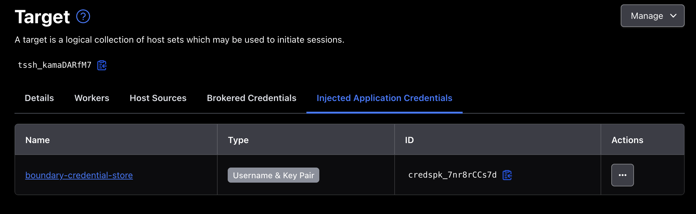

Who actually carries the packets? Boundary workers across AWS, Azure and GCP
I built the same thing three times — one private VM, reachable over SSH with no key on my laptop — in three clouds, with three different data paths. One line of worker config decides which path you get, and almost nothing written down says so plainly.

Read it, then build it 🛠️
This page is written to be followed along with, not just read. Open the Excalidraw board beside it and work through the steps yourself — every screen I filled in is captured there, in the order I filled it in.
Reading gives you the shape of the thing. Only doing it gives you the understanding. I did not learn any of this by reading, and I do not think anyone does.
Three boards, one per cloud. Everything here was worked out on Excalidraw first — the console screenshots, the firewall rules, the terminal output at each hop. The environments are decommissioned: clusters, workers and VMs are torn down, so the addresses below point at nothing that still exists.
Contents
The question nobody asks first
When you set up HashiCorp Boundary, the tutorials get you to a working SSH session quickly and you feel like you understand it. Then someone asks a question you cannot answer: whose machine did my keystrokes travel through?
It matters more than it sounds. On HCP, Boundary gives you managed workers with public IP addresses, and by default your session goes through them. That may be completely fine. It may also be unacceptable — a regulator, a data-residency rule or simply a security review will eventually ask whether your production shell traffic transits infrastructure you do not run, in a region you did not choose.
Boundary's answer is the worker filter, and it has two forms that are easy to confuse because the documentation treats them as symmetrical options. They are not symmetrical at all. One of them keeps HCP in the data path and one removes it, and which you get is decided by a config line most people copy without reading.
The one line that decides everything
Here are the three worker configurations I ended up with. Look only at
public_addr:
# Azure — egress worker
worker {
public_addr = "192.168.9.4:9202" # private address
auth_storage_path = "/home/azureuser/boundary/worker1"
tags {
owner = ["kst"]
cloud-env = ["azure"]
region = ["uae-north"]
}
}
# AWS — worker 1 of a multi-hop chain
worker {
public_addr = "192.168.80.252" # private address
auth_storage_path = "/home/ubuntu/boundary/worker1"
tags {
owner = ["kst"]
country = ["india"]
region = ["ap-south-1"]
}
}
# GCP — ingress worker
worker {
public_addr = "34.18.234.32:9202" # a real, routable public IP
auth_storage_path = "/home/boundary/worker1"
tags {
owner = ["kst"]
country = ["doha"]
region = ["middle-east"]
}
}
This is the whole article in one paragraph. If
public_addr is an address your client cannot reach, your client
cannot dial the worker directly — so the session has to be relayed through HCP's
managed workers, and you use an egress filter to say which of your
workers makes the final hop. If public_addr is an address your
client can reach, you can use an ingress filter and your
client connects straight to your own worker. HCP then only handles registration
and heartbeats, and never sees a byte of your session.
Nothing about the words "ingress" and "egress" tells you that. They describe which
end of the chain the filter is selecting — the worker traffic comes in
through, or the worker traffic goes out from. But the consequence is about
reachability, and reachability is set by public_addr.
Three paths, one target
Same goal in all three clouds: a VM in a private subnet, no public IP, reachable over SSH by an authenticated engineer. Three quite different routes to it.

Azure Egress filter
The worker sits in a private subnet with no public address. It reaches HCP outbound through a NAT gateway, and that is the only way it talks to the outside world. My client cannot reach it directly, so the session goes client → HCP managed worker → my worker → target. The egress filter is how I tell the controller which of my workers should make that last hop.
The security posture here is genuinely good: I expose nothing. The cost is that HCP's infrastructure is in my data path, and I cannot apply any network policy to who reaches it — those workers are shared, public and not mine.
AWS Multi-hop egress
Same idea, one level deeper. The target lives in a second VPC that has no route to the internet at all — no NAT, no gateway, nothing. A single worker could not reach both HCP and the target, so there are two: worker 1 in the boundary VPC, worker 2 in the profile VPC, peered.
Worker 2 never talks to HCP. It dials worker 1, which dials HCP. The session becomes client → HCP → worker 1 → worker 2 → target. This is the pattern for reaching genuinely isolated networks, and it is the one where the reverse connection model below stops being a curiosity and starts being the reason it works at all.
GCP Ingress filter
Here the worker sits in a public subnet with a real external IP, and
public_addr names it. Now my client can dial the worker directly, so
the path collapses to client → my worker → target. HCP is still
involved — the worker registers with it and heartbeats to it — but no session byte
passes through HCP.
My note on the board, written at the moment it clicked, says it better than I would rewrite it now:
"Now we can control the self-managed worker ourselves — like allowing only port 9202 from our clients, which we can't do with HCP managed in the previous Azure flow."
That is the real trade. You take on a public IP and the duty to defend it, and in exchange the firewall in front of the data path becomes yours to write. Allow 9202 from the office range and nothing else, and the exposure is far smaller than the phrase "public IP" suggests.
Who dials whom
This is the part that took me longest to see, and it makes every firewall rule in the article make sense.

Workers do not listen for the control plane. They dial out to it and hold the connection open. You can watch it happen in the worker's own log at startup:
{"op":"reverseconn_ent.(*dialingListener).SetAddresses",
"data":{"address":"<id>.proxy.boundary.hashicorp.cloud:9202",
"msg":"dialing"}}
reverseconn and dialingListener — a listener that dials.
The worker is establishing the connection that the controller will later push work
down. In a multi-hop chain the same thing happens at every level: worker 2 dials
worker 1, worker 1 dials HCP.
The consequences are worth stating explicitly, because they are the whole security argument:
- No worker needs an inbound firewall rule from the internet — ever, in any of these designs, except the GCP ingress worker where I deliberately chose to accept client connections.
- The deepest worker in a chain needs no inbound rule at all, and no NAT gateway, because it only dials its neighbour on the peered network.
- Firewall policy gets simpler the deeper into the network you go, which is the opposite of how bastion-based designs behave.
How the controller picks the route
A thing that confused me early: worker 2 has no configuration mentioning my target. It does not know the address. It never reads the target record. So how does it know where to connect?
It is told. In order:
-
You ask. You say "connect me to
tssh_TnK5FbClBJ". The controller opens that target's record and reads the address off it —192.168.90.199, port 22. - The controller picks the worker. Your egress filter says worker 2, so the controller decides worker 2 will do the dialing.
- The instruction is passed down. When worker 2 asks "is this session real?", the answer is not just yes. It is: yes — and when the client's bytes arrive, open a TCP connection to 192.168.90.199:22.
-
Worker 2 dials the host. An ordinary TCP connect, the same thing
sshwould do from that box. It is just a normal machine on the same subnet as the instance. - It becomes a pipe. Worker 2 now holds two connections — one facing up the chain, one facing the instance — and copies bytes between them. Your traffic arrives at the target as if it came from worker 2's own IP, because it did.

The target has no idea Boundary exists. That is worth sitting with. There is no agent on it, no Boundary port, no configuration. It sees an SSH connection from a machine on its own subnet. Every bit of the access control happened before the packet arrived — which is exactly why this composes with whatever the host already does.
Proving it, hop by hop
Diagrams are claims. Here is the same session observed from every machine in the chain, in the AWS multi-hop build. This is the part I would want to see if someone else wrote this article.
1 · The client

lsof -nP -iTCP -a -c boundary — the client holds two kinds of
connection: several to the controller on 443, and one to
3.224.38.35:9202. That second one is the data path, and its address
is an HCP managed worker, not mine.
2 · Worker 1

dport = :9202 shows worker 1
dialing out to the HCP managed workers. Filtering on
sport = :9202 shows connections arriving from
192.168.90.225 — worker 2. Worker 1 is both a client and a server,
and it initiated the upstream half itself.
3 · Worker 2

192.168.80.252:9202 — worker 1. The
sport = :9202 query returns nothing at all. Nobody
connects to worker 2. It only ever dials.
4 · The target

192.168.90.225, owned by sshd. Ordinary SSH from worker
2, exactly as promised.
Read those four in order and the architecture stops being a diagram and becomes a fact. My laptop talks to an HCP address. Worker 1 talks to HCP and hears from worker 2. Worker 2 talks to worker 1 and hears from nobody. The target hears plain SSH from a neighbour. Nothing in the chain requires the previous hop to be reachable from the internet.
The clouds are not the same
The Boundary configuration barely changed between clouds. The networking around it changed constantly, and that is where the time went. These are the differences that actually cost me something:
| AWS | Azure | GCP | |
|---|---|---|---|
| Outbound internet | Internet gateway + route table entry, both explicit | Built in — there is no gateway resource to create | Default route exists; Cloud NAT only if the VM has no external IP |
| Private egress | NAT gateway + route table | NAT gateway, attached to the subnet | Cloud NAT — and my ingress worker did not need one at all |
| Peering routes | Manual route table entries on both sides | System routes added automatically | Automatic; but the peering must be created from both sides |
| Firewall model | Security groups attached to instances | NSGs attached to subnets or NICs | VPC-level rules selected by network tag or service account |
| Default posture | SG denies inbound, allows outbound | NSG has default rules you cannot delete | Implied deny inbound, implied allow outbound, lowest priority |
| Rule targeting | Attach the SG to the instance | Attach the NSG to the NIC or subnet | Rule names a tag; any VM carrying it is covered |
Two of those caught me properly. GCP peering must be created from both
sides — AWS lets you request from the source and accept at the target,
which is one mental model; GCP wants a matching configuration at each end and the
peering simply stays inactive until it has both. And GCP's firewall rules
are selected by tag, not attached to a machine. You write a rule that says
"this applies to anything tagged vm-self-managed-worker", then tag the
VM. It is closer to a Kubernetes selector than to a security group, and it is
genuinely nicer once the model lands.
The Azure NSG default rules are the other quiet trap. They exist, you cannot delete them, and they will happily allow something you assumed was denied because you were reasoning only about the rules you wrote. Read the defaults before adding rules on top.
Building it, three ways
The shape is the same everywhere. Here it is as a sequence, with the per-cloud differences called out rather than repeated three times.
1 · Two networks and a peering
One network for the worker, one for the workload, peered. In AWS that is two VPCs plus route table entries on both sides. In Azure, two VNets and a peering created in both directions — the system routes appear on their own. In GCP, two VPCs and a peering configured at each end.
The worker subnet is public only in the GCP ingress design. In the other two it is private with a NAT gateway for outbound.
2 · Firewall rules, written as a chain
The rules follow the dial direction, and writing them in that order makes them obvious. For the multi-hop AWS build:
bastion in : SSH from my address (temporary)
out: SSH to worker 1, worker 2
worker 1 in : SSH from bastion (management)
9202 from worker 2 (the chain)
out: 9202 to HCP managed workers
worker 2 in : SSH from bastion (removable)
out: 9202 to worker 1
22 to the target
target in : SSH from worker 2 only
out: nothingNote the target's outbound rule: nothing. It does not need to reach anything, including the internet, and saying so explicitly is free.
For the GCP ingress build there is one extra inbound rule and one fewer hop —
9202 from my client range on the worker. That single line is the thing
the egress designs cannot express.
3 · Install and register the worker
Copy the binary in (via the temporary bastion, or by allowing outbound internet briefly), then run it as a service rather than in a shell:
sudo mv boundary /usr/local/bin/
sudo useradd --system --home /etc/boundary.d --shell /bin/false boundary
sudo chown -R boundary:boundary /home/<user>/boundary
# /etc/systemd/system/boundary-worker.service
[Unit]
Description=Boundary PKI Worker
Requires=network-online.target
After=network-online.target
[Service]
User=boundary
Group=boundary
ExecStart=/usr/local/bin/boundary server -config=/home/<user>/boundary/pki-worker.hcl
sudo systemctl daemon-reload
sudo systemctl enable --now boundary-worker
sudo journalctl -u boundary-worker -f
The first thing the log says is that the node is not yet authorized, which
is correct and not an error. Registration is a two-party handshake: the worker
writes an auth_request_token into its storage directory, and you paste
that into the controller to approve it.
4 · Targets, credentials and the filter
Create the credential store and target, then attach the credential as an injected application credential so the user never handles it:

Then the filter itself, on the target. An egress filter selects which of your workers makes the final hop; an ingress filter selects which worker the client is allowed to enter through. Both are written against worker tags, which is why the tags in those configs above are worth choosing deliberately:
# egress — pick the worker that can reach the host
"azure" in "/tags/cloud-env"
# ingress — pick the worker the client may connect to
"gcp-cloud" in "/tags/automated"Tag on the things you might one day filter on: cloud, region, owner, whether it was built by automation. Tags are cheap to add now and awkward to retrofit once targets reference them.
Which one should you use?
| Use | When | Because |
|---|---|---|
| Egress filter | Default. You want zero exposed surface and have no opinion about the transit path. | Nothing of yours accepts an inbound connection. Simplest thing that works. |
| Multi-hop egress | The target's network has no route to the internet, or crosses a trust boundary you will not open. | Each worker only needs to reach its neighbour. The deepest one needs no inbound rule and no NAT. |
| Ingress filter | Session traffic must not transit third-party infrastructure, or you need control over who reaches the data path, or latency matters. | Shortest path, and the firewall in front of it is yours to write. Costs you a public IP to defend. |
If I were starting again on a real system I would begin with the egress filter, because it is the least to get wrong, and move to ingress only when someone can articulate why the transit path matters. "It feels better" is not a reason to own a public IP. "Our sessions may not traverse infrastructure we do not operate" is.
Multi-hop is not a more advanced version of the other two — it answers a different question. Reach for it when the network genuinely has no way out, not when you want extra layers. Every hop is another machine to patch, and the security benefit of hop three over hop two is close to zero if hop two was already private.
The thing I did not expect to come away with is how little of this is about Boundary. The controller does the same job in all three clouds and the worker config differs by one meaningful line. What differs is the network, and the reason the same design took three attempts is that AWS, Azure and GCP disagree about what a route is, what a firewall attaches to, and what happens by default. Boundary was the easy half. Again.
Further reading
- Worker tags and filters — the filter expression syntax, and how tags are matched.
-
Worker configuration
— every field, including
public_addrandinitial_upstreams. - Multi-hop sessions — the chain model, and which tier it requires.
- Domain model — targets, host sets, credential stores and how the pieces relate.
- GCP VPC firewall rules — implied rules, priority, and targeting by tag or service account.
- Boundary and Microsoft Entra ID — the identity half of the same system: who is allowed to ask for these sessions in the first place.